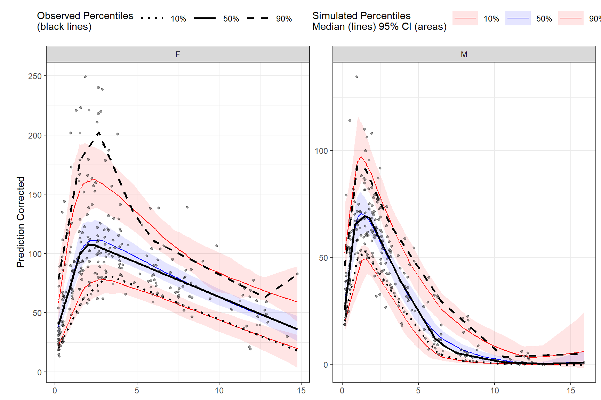

Chapter 3 Functions
3.1 observed()
The observed() function is always the first function used in the VPC piping chain and is used to specify the observed dataset and corresponding variables. There are three arguments that are required in order to use observed. The first argument is either a data.frame or data.table, the second argument is the name of x-variable in the observed data, and the third argument is the name of the y-variable. Note variable names should be unquoted.
3.2 simulated()
The simulated() function is used to specify the simulated dataset and corresponding variables. There are two arguments that are required in order to use simulated(). Since the function is “piped” in after the observed() function, the first argument is the tidyvpcobj and should not be included, followed by the name of the simulated data, then the name of y-variable in the simulated data. Variable names should be unquoted and x-variable should not be included as it is recycled from the observed() function.
3.3 binning()
The binning() function provides the binning method to derive the vpc and should be inputted as a character string in the bin argument. Binning methods include: “ntile”, “pam”, “sd”, “equal”, “pretty”, “quantile”, “kmeans”, “jenks”, “centers”, “breaks”. Some methods such as “ntile” and “pam” will require you to specify the number of bins using the nbins argument i.e. nbins = 9.
If using bin = "centers" or bin = "breaks you must also provide the centers/breaks argument as numeric vector in the function i.e. centers = c(1,3,5,7).
You can also bin directly on x-variable. If using this type of binning, the bin argument should be the unquoted variable name that you used in the observed() function i.e. bin = NTIME for the Nominal Time variable in the data.
Binning on x-variable, NTIME
Binning with “ntile”
vpc <- observed(obs_data, x = TIME, y = DV) %>%
simulated(sim_data, y = DV) %>%
binning(bin = "ntile", nbins = 9)Binning with “breaks”
3.4 binless()
Binless methods utilize additive quantile regression (AQR) in place of traditional binning. Use the binless() function instead of binning() to derive a binless VPC. By default, binless() performs AQR at the 5%, 50%, and 95% quantiles but you can change this using the qpred argument which takes a numeric vector of length 3 i.e. qpred = c(.1, .5, .9) for the 10%, 50%, 90% quantiles.
The lambda smoothing parameters for each quantile are optimized by default with AIC as indicated by the optimize = TRUE argument, however, if you would like to use different lambda values for each quantile set optimize = FALSE and specify lambda values for each quantile as a numeric vector of length 3 with the lambda argument i.e. lambda = c(1,3,2) corresponds to the lambda values for the quantiles in the qpred argument (lower, median, upper). Note: the higher the lambda value the smoother fit to the data.
Binless optimized
Binless with user specified lambda values at 10%, 50%, 90% quantiles. Set optimize = FALSE and provide lambda smoothing parameters as a vector of length 3 for lower, median, upper quantiles.
3.5 vpcstats()
The vpcstats() function is always the final function used in the piping chain and calculates the statistics needed to plot a VPC. If using binning()methods, you may specify alternative quantiles using the qpred argument. The default quantiles used are 5%, 50%, 95% i.e. qpred = c(0.05, 0.5, 0.95). If using binless() method, there is no need to include the qpred() argument here as the quantile values supplied in the binless() function will be used to calculate the VPC statistics for plotting.
3.6 stratify()
To stratify VPC include the stratify() function before using the binning() or binless() function and use the unquoted stratification variable(s) name as a formula. Let’s stratify on GENDER in the data, which contains 2 levels (GENDER = “M”, GENDER = “F”). Include as many stratification variables as your model calls for.
vpc <- observed(obs_data, x=TIME, y=DV) %>%
simulated(sim_data, y=DV) %>%
stratify(~ GENDER) %>%
binning(bin = "pam", nbins = 7) %>%
vpcstats()
plot(vpc)Using multiple stratification variables GENDER and STUDY.
3.7 censoring()
To censor observed data below lower limit of quantification (LLOQ), include the censoring() function after simulated() and use the lloq argument to specify either a variable in the data or specific value for censoring. The blq argument creates a logical TRUE/FALSE in the data that indicates whether the value is below the limit of quantification and is typically defined as rows with DV < LLOQ in the data. Using the censoring() function will censor only observed data below lower limit of quantification when plotting, simulated data will still be plotted.
Censoring using numeric value.
vpc <- observed(obs_data, x=TIME, y=DV) %>%
simulated(sim_data, y=DV) %>%
censoring(blq=(DV < 25), lloq=25) %>%
binning(bin = "jenks", nbins = 5) %>%
vpcstats()
plot(vpc)Censoring using LLOQ variable in the data.
First, let’s add an LLOQ variable to the observed data.
Then we’ll specify lower limit of quantification as the unquoted variable name in our data LLOQ. Let’s also provide our own lambda values.
vpc <- observed(obs_data, x=TIME, y=DV) %>%
simulated(sim_data, y=DV) %>%
censoring(blq=(DV < LLOQ), lloq=LLOQ) %>%
binless(optimize = FALSE, lambda = c(1.5, 2.5, 1.7)) %>%
vpcstats()
plot(vpc)The tidyvpc package also allows you to use different LLOQ for each level of stratification variable. We’ll set an LLOQ value of 50 for Study A and 25 for Study B and calculate statistics at 5%, 50%, 90% quantiles.
3.8 predcorrect()
To derive a prediction corrected VPC (pcVPC) use the predcorrect() function. The predcorrect() function takes one required argument pred which should be the unquoted variable name of the population prediction variable in the data. If using binning methods, the predcorrect() function should be called after binning(), however, if performing LOESS pcVPC for binless() methods, use predcorrect() before calling binless() and set binless(loess.ypc = TRUE). Note: if model was fit using log scale of DV make sure to include the argument log = TRUE in predcorrect() to perform the appropriate prediction correction calculation.
Prediction corrected using binning methods.
vpc <- observed(obs_data, x=TIME, y=DV) %>%
simulated(sim_data, y=DV) %>%
stratify(~GENDER) %>%
binning(bin = NTIME) %>%
predcorrect(pred=PRED) %>%
vpcstats()
plot(vpc)LOESS prediction corrected using binless method for 10%, 50%, 90% quantiles. If optimize = TRUE, the LOESS smoothing parameter, span, will be automatically optimize using AIC. Note: predcorrect() must be called before binless() if setting loess.ypc = TRUE.
vpc <- observed(obs_data, x=TIME, y=DV) %>%
simulated(sim_data, y=DV) %>%
stratify(~GENDER) %>%
predcorrect(pred=PRED) %>%
binless(qpred = c(0.1, 0.5, 0.9), optimize = TRUE, loess.ypc = TRUE) %>%
vpcstats()
plot(vpc)
To specify your own span value LOESS pcVPC instead of optimizing with AIC, use the span argument in the binless function. Span should be a numeric between [0,1], with higher values providing a smoother fit. Remember, to also include the smoothing parameters for AQR by using the lambda argument and set optimize = FALSE.